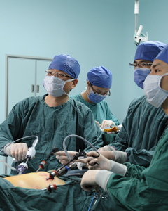

栏目导航

科室介绍
福建医科大学附属协和医院胃外科（其前身为肿瘤科），是我国综合性医院中第一个治疗“胃肿瘤”的专业病区， 是“胃肿瘤”专业临床、科研和教学的主要基地。科室技术力量雄厚,学术梯队健全，设有1个病区，共47张床位， 实收住院病人70人以上。拥有高级职称者9名，其中教授3名、副教授4名，博士生导师1名、硕士研究生导师3名； 中级职称者2名，博士、硕士学位者占医师总数的80%以上。科主任黄昌明教授现任中国抗癌协会胃癌专业委员会常委、 中国医师协会肿瘤外科医师委员会副主任委员、中国医师学会微创外科委员会委员、中华医学会肠外肠内营养学分会 瘤营养学组委员、福建医科大学肿瘤中心副主任、《中华胃肠外科杂志》编委、《消化肿瘤杂志（电子版）》编委、 《中华外科杂志》审稿专家。
业精于勤，医以成德。三十八年前，福建省肿瘤事业刚刚起步，为了适应专科治疗的需要，院领导及肿瘤科的创始人张祥福 教授高瞻远瞩地成立了协和医院肿瘤治疗组。经历了艰苦的创业，肿瘤科逐渐发展壮大，形成了以消化道恶性肿瘤防治为重点， 兼顾乳腺癌、甲状腺癌等恶性肿瘤综合治疗为特点的科室。至1994年成为福建医科大学第一批“肿瘤学”专业硕士点， 同时也是福建省“肿瘤学”专业集临床、科研和教学为一体的主要基地。90年代后，卢辉山教授继续发扬肿瘤科胃癌诊疗的特色， 带领全科医生努力拼搏，完成了多种高难度的胃癌手术，手术成功率达98.5%，各项技术指标均居国内领先水平。 胃外科正是在原先肿瘤科的基础上孕育成长起来的，科室坚持“严谨、求精、勤奋、奉献”协和精神，在努力提高医疗 服务水平的同时，重视医疗服务质量和服务意识，建立起胃癌现代外科治疗新理念，推广胃癌规范化治疗，并在此基础上开展了 胃癌D2根治术、晚期胃癌新辅助化疗和腹腔镜辅助胃癌D2根治术等新疗法，总结出一套合理高效的胃癌综合治疗方案。 经8000多例胃癌治疗结果随访，5年生存率由70年代的20%，上升到现在的60%，早期胃癌为93%，达到国内先进水平。 现任胃外科主任黄昌明教授，作为福建省唯一一位中国抗癌协会胃癌专业委员会常务委员、学科带头人，在熟练传统 开腹手术的基础上，锐意进取，与时俱进，克服重重困难，娴熟地掌握了“腹腔镜胃癌D2根治术”这一新技术，并将之发展为 胃外科的特色诊疗项目，为广大患者提供微创治疗的平台，大大减轻了患者的痛苦。短短7年余时间，完成了3000余例腹腔 镜胃癌手术，手术完成例数居国内首位。科室还特别注重对手术方式的不断改进和探索，在国际上首次报道腹腔镜胃癌脾门 淋巴结清扫“黄氏三步法”，在国内率先开展“全腹腔镜远端胃癌根治术并Delta吻合”的基础上开拓创新，成为国际上首个完 成“全腹腔镜远端胃癌根治术并改良Delta吻合”的单位。此外，科室腹腔镜手术技巧多次在国际一流专业杂志上发表，得到 国内外同行的高度认可。科室对胃肠道间质瘤的治疗也取得了许多成果，在卢辉山教授、周永建副教授带领下开展了多项研 究，治疗了大量病人，积累了丰富的经验，是国内规范治疗胃肠道间质瘤最多，无疾病进展比例高，疗效最好的单位之一， 其手术及靶向药物的治疗等方面位居国内先进行列。
科室除了大力培养中青年医师外，还重视对外学术交流和科学合作，鼓励参加国际会议，积极参加并出色完成了多个国内或 国际间合作的临床试验。科室还建立并完成我省第一个“胃癌患者数据库管理系统”，该系统的建成，对今后开展学术研究和 科研论文的撰写提供了可靠的数据保证，使科研水平和论文质量上升到一个新的高度。同时，科室已在国内外医学期刊中公 开发表论文200多篇，其中SCI60多篇，国家级核心期刊100多篇；共获得福建省科技进步二、三等奖5项，福建省医药卫生科 技进步一、二、三等奖共11项。与此同时，科室先后主办“2009年胃肠道肿瘤规范治疗中高级培训班”、“全国腹腔镜胃癌淋 巴结清扫高级研讨班”、“全国胃癌外科规范化治疗高峰论坛”等大中型培训班二十余次，有力的推动了省内外胃癌外科治疗的 发展。值得一提的是，2014年我科主办的“中日韩胃癌外科规范化治疗高峰论坛”是迄今国内规模最大的胃癌领域高水准、国 际化学术会议，显著提高了科室的国际影响力。